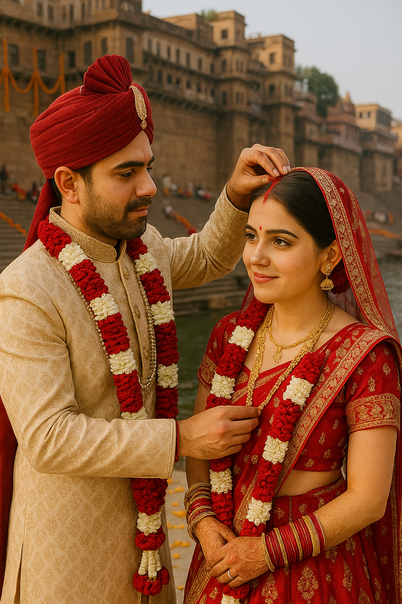
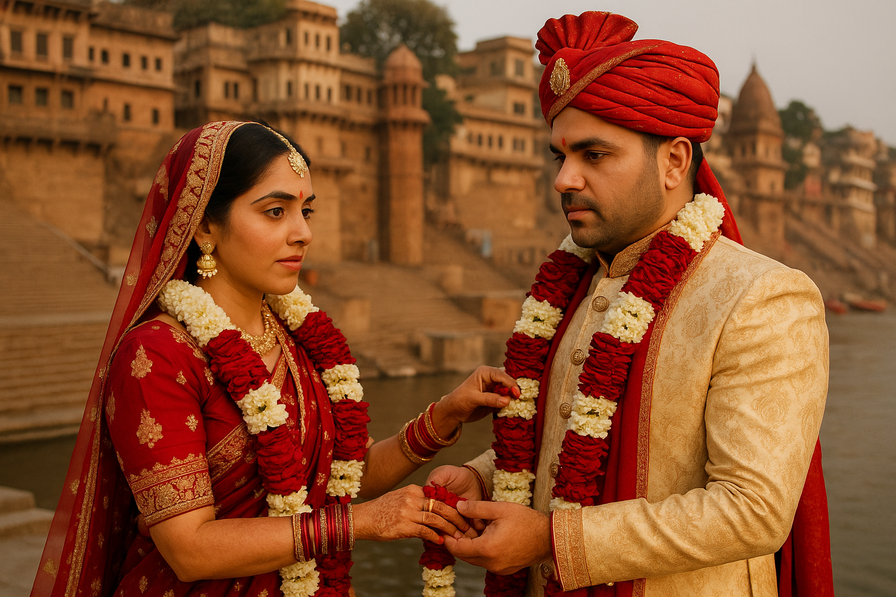

Whispers of the Heart: A Tale of Love and Redemption
"Timeline" pr click krke ek dil se yatra ki shuruaat kro. Hmari yado ke es safar mein dub jao, jaha har ek lafz hmare rishte ki khushbu se bhara h. Uske baad "Apology" or fir "Letter" ko padho, jaha main apne dil ki gehraiyo se mafi mangna chahta hu or wo sab kuch express kiya h jo main mehsoos krta hu — ek sincere koshish hmare rishte ko smjhne, sambhalne or usse or gehra bnane ki.
Har lafz, har jazba, meri taraf se ek vada h — har glti ko sudharne ka, har pal ko fir se pyara bnane ka. Tmhari smjhdari or pyar mere liye behad important rkhta h, jo hmari kahani ko ek nayi roshni, nayi umeedein deta h.
Tmhara es safar mein hona mere liye ek blessing h. Shukriya, meri zindagi ka ek itna khubsurat hissa banne ke liye.
Timeline

Yaad h na tmhe... sb kuch kaise shuru hua tha? Jb maine tmhe Twitter pe pehla msg kiya tha 8 July 2017 ko...
woh bhi bina soche smjhe bas Tmhari woh birthday wali photos dekh ke... Par us msg ka reply aaya to shi...
lekin 3 September ko. Starting se hi tmne wait karwaya tha... tab se leke abhi tak wait hi kr rha hu 🥺.
Fir dheere dheere bate badhi... roz ki chats, woh excitement... woh nayi feeling jab kisi anjaan ko jane ki
curiosity hoti h jo abhi v same h. Jaise jaise tmse bate krta gaya, waise waise tm dil ke aur kareeb aate
gyi. Tabhi toh propose kr diya... lekin tumne sidha mana kar diya 💔.
Par us mana karne ke baad v dil nhi mana... kyuki lagta tha ki yeh kahani yahi khatam hone wali nhi h.
esiliye lga rha... bina kisi shikayat ke... sirf tmhare sth baat karne ki khushi thi.
Or fir woh din aaya... 14 November... jab finally tmne ha kiya 🥰... hm relationship mein aaye.
Tb samjha ki zindagi ka sabse khoobsurat chapter shuru ho gya h.. Jis ladki ne kabhi reply bhi nhi diya tha,
woh aaj meri zindagi ka sbse important hissa ban chuki thi.
Fir wo pehli mulaqat... 20 April tmhara b'day 😍... uss din ki excitement, nervousness sb yaad h.
Tmhe pehli baar dekhna... wo aankhon ki chamak... woh hasi... Wo mera hath kapna... lagta tha pura waqt
ruka hua ho sirf hmare liye. Mera station pe rukna, sona... sirf tmse milne ke liye... kya kya nhi kiya hmne.
Or pyar toh bs badhta gya... har call, har chat, har planning time ke sth... National Park ki woh scooty ride...
woh hawa... tmhara mujh se scooty pe durr baithna... raste mein ruk ke kiss krna... Airbnb pe sath khana bnana...
woh chhoti chhoti khushiya... Wo last time mandir mein sb hasi... wo moments ab sirf meri duniya h.
Par kahani kabhi perfect nhi hoti... maine galtiyan ki... misunderstandings aaye... fights hue... duriyan bni.
Kabhi kabhi lagta tha ki sb khatam ho jayega... tm dur ho jaogi... par jab tm door hoti thi, toh woh khaali khaali pan...
woh andhera sab kuch khatam kar deta tha.
Fir bhi tmne mujhe chhoda nhi... Tmne mujhe sambhala... har jagah maafi mili, smjh aaya... fir se paas aaye.
Jaise baarish ke baad dhup nikalti h... waise hi hmara pyar har bar naye rang leke aaya.
Aaj bhi jb milte h... 7-8 saal baad v... wahi excitement, wahi energy. Tmhare sath woh bachpana feel hota h...
besharam hoke hasna... ek naan pe 1 ghante tak hasna... bina tension ke sirf khush rehna.
Tmhari muskaan, woh aankho mein gussa... sab kuch aaj bhi waise hi lagta h.
Hmne woh sb kiya jo shayad life mein kisi or ke sath v nhi kiya... bina wajah hsi, masti, bina wajah ladna...
movie dekhte waqt tmhara darna... wo sath sote waqt tmhara mere paas aake hug krna.. woh comfort...
sab kuch meri life ka best part h.
Aaj v wo moments sochta hu to ek ajeeb si sukoon milta h... ek khushi... ek dard bhi ki aaj woh sb dur ho gaya.
Tm meri life ka wo part ho jo kabhi purana nhi hoga. 7 janam tmhare sth rahunga tmhare piche piche...
jiske sth maine waqt nhi... ek puri duniya jee li h.
Or abhi v... dil bohot miss karta hai tmhe... roz call krne ka, msg krne ka, tumse baatein krne ka,
ladne ka, daant sunne ka... sab kuch miss krta hu... Rota hu Har din mann karta hai tmse baat karu...
bas woh connection phir se jee lu Jo kho diya h.
Maine 1 saal ka promise kiya h tmse dur rehne ka... bas es hope mein ki phir se woh purane wale din la payein.
Es baar glti nhi krunga tmhe khone ki... Es baar sirf sambhalunga... sirf pyar dunga.
Or dekhna... yeh koi coincidence nhi h... 8 July 2017 ko maine tmhe pehla msg kiya tha...
aur 7 July 2025 ko tm mujhe next chance dene wali ho ❤️.
Itna perfect coincidence ho hi nhi skta... Es timeline ka kuch toh matlab h.. kuch to kismat ka connection hai jo ye dates jod rahi h.
Bs esi hope ke saath zinda hu.. esi umeed ke sath ki ek din hum fir se wo saari memories jeeyenge...
**Love you Bubbu ❤️**
**Tm meri life ki pehli, asli aur aakhri mohabbat ho.**

Apology
Dear Meri Bubbu 🥰,
Main dil se mafi Mangna chahta hu apni galtio ke liye...
I hope yeh message tm tak pahuche, chahe es moment mein hi shi. Pichle kuch time se bas ek hi chiz soch rha hu —
hm dono ka safar, hmara connection, aur meri wo har galti jo tmhe hurt kar gyi. Aaj main bs yeh kehna chahta hu ki
I am truly sorry meri har baat or action ne tmhe dukh diya h, hurt kiya uske liye.
Hmara safar, jo kitni yado, kitni hasi-mazaak, or un moments se bhara tha jo humesha mere dil ke kareeb rahenge.
Wo sare pal, jab bina kuch kahe sab kuch keh jaate the, wo hassi jo kabhi rukti nhi thi... wo sab meri life ki
sabse special cheze h.
Main bs ye kehna chahta hu ki mera pyaar tmhare liye kabhi km nhi hua Na hoga ❤️. Meri Har Galti, har problem ke
beech v tm mere liye whi thi, ho, or rahogi. Wo connection jo humare beech h na... usse khona main soch bhi nhi sakta.
Main manta hu ki jo bhi galtiyan maine ki... unka zimmedar main hi hu. Koi bhi reason nahi h jo meri galtiya
justify kr ske. Lekin main puri responsibility leta hu apni har kami ki. Yeh meri maturity ki kami thi, meri soch
ki galti thi... lekin mere dil ka pyaar kabhi fake nhi tha.
Aaj yeh likhte waqt main chahta hu ki tm mere regret ko mehsoos kro... ki tmhe dukh dene ka jo guilt h,
woh main har din carry karta hu. Tm meri zindagi ka woh part ho jo main kabhi khona nhi chahta hu...
or essi wajah se I am truly sorry for everything bubbu ❤️
Mujhe pta h ki sirf yeh kehne se kuch nhi badlega. Lekin main ready hu... jo bhi karna pade,
tmhara trust wapas jeetne ke liye. Tmhari khushi, tmhara sukoon, aur hamara connection mere liye
sabse zyada important hai.
Main respect karta hu tumhari space ka... tmhare time ka. Jab bhi tm ready ho mujhse baat karne ke liye,
main yhi rahunga... intezaar karta hua.
Hmari kahani koi simple kahani nhi h... yeh ek aisi journey hai jisme pyar, samajh, aur growth dono ke liye zaroori h.
Or main es journey ko phir se ek naye tareeke se jeena chahta hu — sirf tmhare sath.
With all my love,
Tmhara Tension 💔
Letter from the Heart
Dear Mere Hone Wale Baccho Ki Maa 🥰,
Ye letter mere dil ki gehraiyon se likha gya h... har lafz ke sth dil se ek ek tuta hua tukda girta ja rha h... jaise har lafz ke sth ek ek dil ka tukda maafi mang rha ho 💔❤️🩹.
Jb ye likh rha hu, toh aisa lag rha h jaise hmari kahani mere saamne ek ek scene ban ke khadi ho gyi h... har ek pal, har ek memory... woh pehli mulaqat ka excitement, woh chhoti chhoti khushiya, woh ankahi bate... sb kuch mere dil ke canvas pe ek pyari painting ban gayi h.
Jb hm pehli baar mile the, tabhi se meri life ka ek naya chapter shuru hua tha. Har din tmhara saath baat krna... wo hansi jo tmhari wajah se thi, wo muskaan jo sirf tmse thi... sb kuch mere liye priceless h. Tm meri zindagi ki wo thandi hawa ho jo har udaasi ko mita deti h... woh ek pal ka sukoon jo duniya ke shor mein v chain deta tha.
Mujhe pta hai hmare safar mein problems aaye, Maine baar baar galtiya kiya... par un sabke bich v tmne kabhi mera hath nhi chhoda. Tm meri wo strength rhi ho jo har girne pe mujhe uthati rhi... Or shayad main hi woh galtiyan krta gya jo kabhi nhi karni chahiye thi.
Aaj main sirf itna kehna chahta hu ki tmhara asar meri rooh tak h. Tm meri identity ka wo hissa ho jo koi kabhi mujhse alag nhi kar sakta. Tmne mujhe jo smjha, jo pyar diya... uske liye main hamesha shukraguzaar rahunga.
Thank you... mere humsafar hone ke liye, mere dost, mere partner, mere sukoon ke liye. Tmhare saath bitaya har pal mere dil ke sabse pyare kone mein h... Or jitna bhi waqt guzra, uss sab ko lekar aage aur yaadein banane ka intezaar h mujhe.